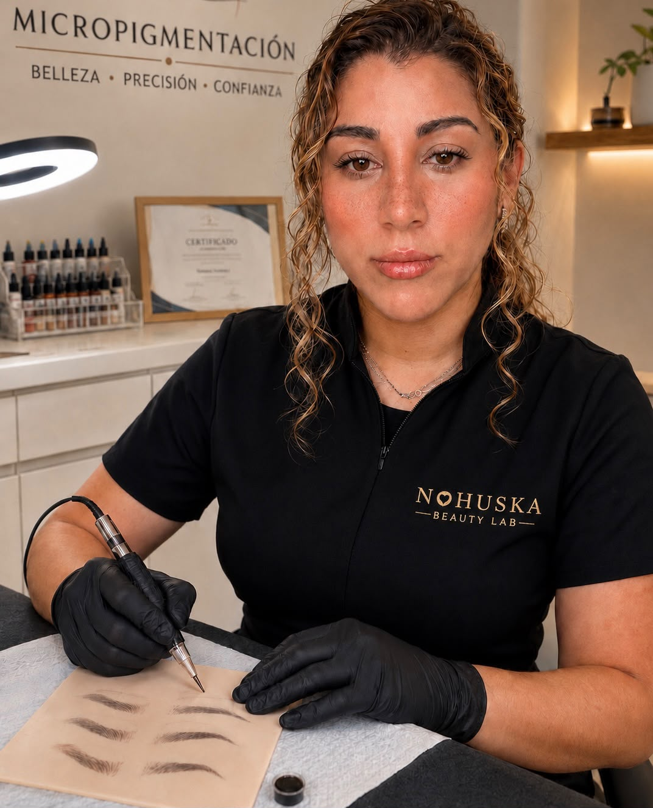
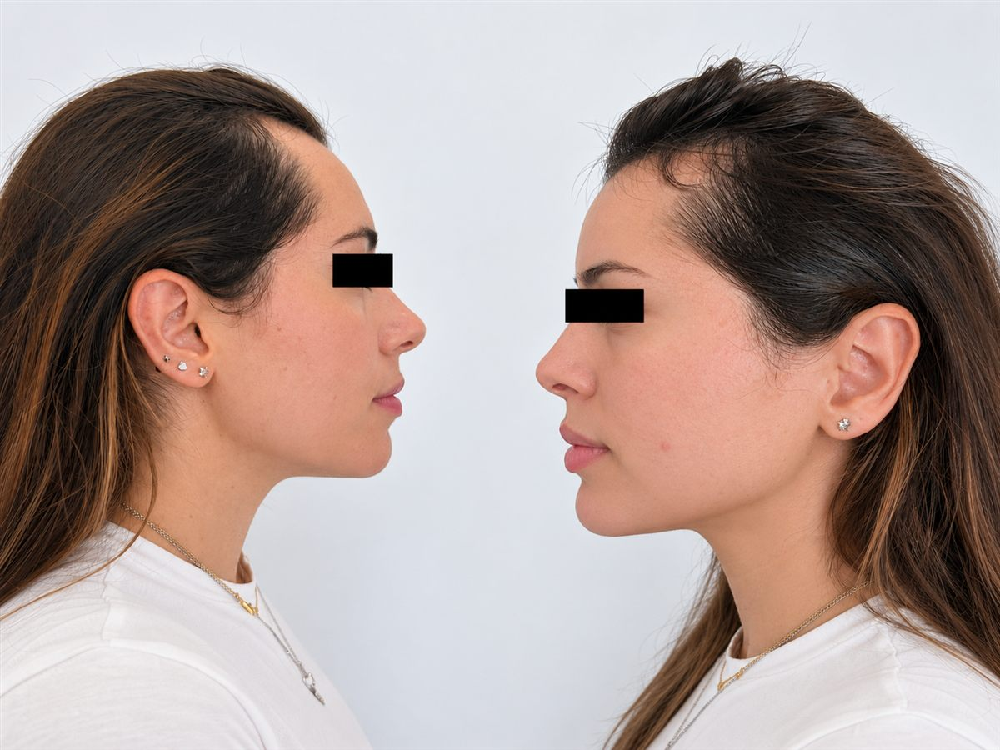

Estudio en Granollers · Vallès Oriental y cerca de Barcelona
Micropigmentación capilar en Granollers: efecto densidad
Valoramos casos de micropigmentación capilar femenina y masculina para raya, entradas, zonas con poca densidad o línea capilar. Estudiamos la zona, el patrón existente, el tono y el resultado posible antes de recomendar sesiones. Recibimos consultas de Granollers, Vallès Oriental y Barcelona en nuestro estudio de Granollers.

Respuesta rápida
¿Buscas micropigmentación capilar cerca de Granollers?
Nohuska ofrece valoración personalizada de micropigmentación capilar, tricopigmentación o SMP para estudiar efecto densidad, entradas y diseño de línea capilar. El servicio se realiza únicamente en el estudio de Granollers, con cita previa.
Si vienes desde La Roca del Vallès, Canovelles, Les Franqueses, Cardedeu, La Garriga, Mollet u otro municipio del Vallès Oriental, puedes enviarnos fotografías actuales para recibir una primera orientación antes de desplazarte.
Antes de recomendar la técnica
- Valoramos el cuero cabelludo y el patrón existente.
- Definimos un objetivo visual posible y proporcionado.
- Explicamos diseño, sesiones, evolución y cuidados.
- Facilitamos un presupuesto adaptado a la superficie.
Qué es y qué no es
Un efecto visual adaptado a tu punto de partida.
La micropigmentación capilar, también conocida como tricopigmentación o SMP, trabaja con puntos de pigmento en el cuero cabelludo para reducir visualmente el contraste y crear una apariencia más uniforme. Puede plantearse para efecto densidad, entradas o una línea capilar proporcionada.
No crea cabello, no frena su caída y no sustituye un diagnóstico o tratamiento médico. Por eso la valoración presencial es imprescindible: revisamos el cuero cabelludo, la superficie, el patrón, el tono y las expectativas antes de recomendar la técnica.
Qué podemos valorar
Densidad femenina · valoración individual
Micropigmentación capilar para mujer en Granollers
En mujeres, la consulta suele centrarse en una raya que se percibe más ancha, entradas, zonas localizadas o mayor contraste entre el cabello y el cuero cabelludo. La micropigmentación capilar femenina busca crear un efecto visual de densidad; no genera cabello ni trata la causa de la pérdida.
Antes de recomendarla revisamos el patrón, la estabilidad de la zona, el tono del cabello, la piel y los antecedentes que nos comuniques. Si el caso necesita una valoración sanitaria, lo indicaremos antes de plantear el procedimiento estético.
Tu valoración en Nohuska
Criterio profesional antes de diseñar.
Valentina, especialista con más de cinco años de experiencia y formación en micropigmentación, realiza la valoración capilar y plantea una propuesta adaptada a la superficie, el patrón existente, el tono y el objetivo visual.
No utilizamos un diseño estándar: primero determinamos si el procedimiento es adecuado, qué resultado puede plantearse y qué límites debes conocer antes de reservar.
Primera orientación por fotografías
Envíanos imágenes actuales con luz natural de la raya, las entradas o la zona de menor densidad. Te indicaremos si conviene concertar una valoración presencial en Granollers.
Enviar fotografíasProceso real · Nohuska
Precisión, planificación y seguimiento.
Este vídeo muestra parte de un procedimiento real realizado en Nohuska. La valoración inicial permite decidir el diseño y explicar las fases, los cuidados y la evolución esperada antes de comenzar.
La imagen inicial puede verse más intensa. El aspecto cambia durante el proceso de asentamiento y cada piel evoluciona de forma diferente.
Cómo planificamos el tratamiento
Micropigmentación capilar cerca de ti
Granollers, La Roca y Vallès Oriental.
Las valoraciones y los procedimientos se realizan con cita previa en Avinguda Sant Esteve, 40, 08402 Granollers. Atendemos a personas de Granollers, Canovelles, Les Franqueses del Vallès, La Roca del Vallès, Cardedeu, La Garriga, Mollet del Vallès y otros municipios del Vallès Oriental, además de Barcelona.
No tenemos sedes en esas localidades: todas las citas se realizan en Nohuska Beauty Lab, en Granollers. El horario habitual es de lunes a sábado, de 10:00 a 20:00.
Qué enviar para orientarte
- Fotografías actuales con luz natural.
- Zona que deseas valorar: entradas, línea o densidad.
- Trabajos anteriores, si existen.
- Resultado visual que buscas.
Preguntas sobre micropigmentación capilar
¿Qué es la micropigmentación capilar?
Es una técnica estética que deposita pigmento en el cuero cabelludo para reducir visualmente el contraste, recrear un efecto de densidad o definir una línea capilar. No crea pelo ni sustituye un tratamiento médico.
¿Cuánto cuesta en Granollers?
El presupuesto depende de la superficie, el objetivo y las sesiones planteadas. La valoración es gratuita y te permite recibir una propuesta personalizada antes de decidir.
¿Cuánto dura el resultado?
La evolución y la duración varían según la piel, la zona, la exposición solar, los cuidados y otros factores personales. En la valoración explicamos el mantenimiento aplicable a tu caso.
¿Sirve para entradas y falta de densidad?
Puede plantearse para entradas, línea capilar o efecto densidad, siempre que la valoración confirme que la técnica es adecuada para la zona y el objetivo visual.
¿Sirve para mujeres con poca densidad?
Puede ayudar a reducir visualmente el contraste en la raya, las entradas o zonas localizadas. Antes debemos valorar el patrón, la piel, el tono del cabello y el objetivo; no genera pelo ni sustituye una valoración sanitaria.
¿Quién realiza la valoración capilar en Nohuska?
Valentina, especialista con más de cinco años de experiencia y formación en micropigmentación, realiza la valoración y diseña la propuesta según la zona, el patrón, el tono y el objetivo visual.
¿Atendéis a personas de La Roca del Vallès?
Sí. Atendemos con cita previa a personas de La Roca del Vallès y de otros municipios de la comarca. La valoración y el tratamiento se realizan en Nohuska Beauty Lab, en Granollers.
¿Dónde se realiza?
En Nohuska Beauty Lab, Avinguda Sant Esteve, 40, 08402 Granollers, con cita previa.
Más información de Nohuska
Empieza por una valoración capilar.
Te explicaremos posibilidades, límites y propuesta antes de reservar.
Antes de pedir orientación
Qué fotografías ayudan a valorar tu caso capilar.
Para una primera orientación, envía imágenes actuales de frente, laterales y la zona de menor densidad con luz natural y sin filtros. Indica si te preocupa la raya, las entradas o el efecto densidad; así podremos decirte si conviene una valoración presencial.
Criterio antes de reservar
Cuándo puede encajar la micropigmentación capilar femenina.
| Consulta habitual | Qué valoramos | Qué explicamos |
|---|---|---|
| Raya más visible | Anchura, patrón, contraste y estabilidad de la zona | Posible efecto visual de densidad y límites |
| Entradas o línea capilar | Proporción con facciones y cabello existente | Diseño conservador y evolución esperada |
| Zonas localizadas | Piel, antecedentes y objetivo de la consulta | Si conviene valoración presencial o sanitaria previa |
La página de micropigmentación capilar para mujer amplía preparación, límites y preguntas frecuentes. Esta página mantiene la intención local de Granollers sin crear otra landing duplicada.
Caso real autorizado · capilar
Referencia visual de micropigmentación capilar femenina.

Servicio capilar · Granollers y Barcelona
Una sola valoración para cada caso capilar
La búsqueda puede ser micropigmentación capilar Granollers, efecto densidad o micropigmentación capilar femenina; la valoración sigue siendo individual y se realiza en el estudio de Granollers. Si vienes desde Barcelona, consulta la guía de micropigmentación cerca de Barcelona antes de desplazarte.
No creamos páginas duplicadas por municipio: esta landing mantiene la intención local de Granollers y la guía para mujer, densidad y entradas amplía la intención informativa.